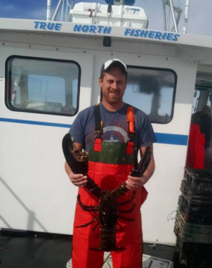
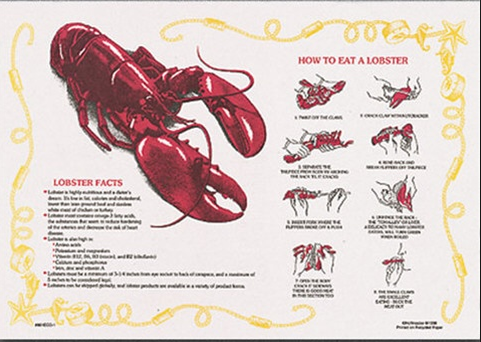
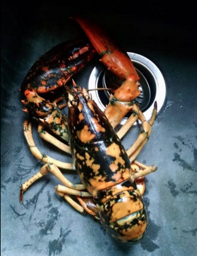

Pictured is my brother Josiah Porter with an 18 pound male lobster. My brother works for a local fisherman as a sternsman for a lifelong friend of our family on a boat called the Charlene Gail. In downeast Maine, lobster fishing is the livelihood of many families. Most often the craft is passed down from one generation to another. It is called carrying on the legacy. In addition to Down East Maine's lobster delicacy, which is famous worldwide, the community is known for other fresh seafood, such as clams and scallops. Pictured above is a Calico Lobster caught by my brother Josiah Porter. The Calico Lobster is a rare specimen to catch while fishing. According to the National Geographic article entitled, "Half-Orange, Half-Brown Lobster Found--How Rare is it ?" there is a 1 in 30 million chance that this type of lobster will ever be caught.
The video above captures the crew of the Charlene Gail setting lobster traps off the Coast of Cutler Harbor. Setting and hauling traps is a weekly task performed on average 2 to 3 times per week with the exception of its busy time, October and November, which may force the crew to fish 4 days per week. A typical fishing season lasts from July to the middle of December and most fishermen fish 700 to 800 traps per season. As one can see from the video, lobster fishing is touted as one of the most dangerous jobs in the United States.
 The above image demonstrates how to shell out a lobster.
